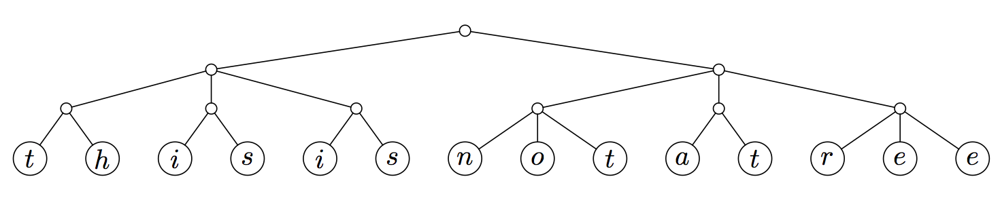
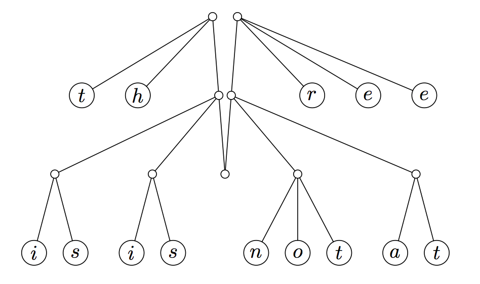
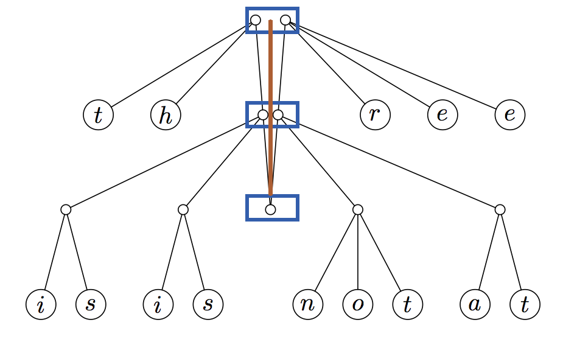

Finger tree
???+ warning "注意" 此章是选读内容，在阅读前请确定你对函数式编程（Functional Programming）有一定了解．
简介
手指树（Finger Tree）是一种 纯函数式 数据结构，由 Ralf Hinze 和 Ross Paterson 提出．
为什么需要手指树
在函数式编程中，列表是十分常见的数据类型．对于基于序列的操作，包括在两端添加和删除元素（双端队列操作），在任意节点插入、连接、删除，查找某个满足要求的元素，将序列拆分为子序列，几乎所有的函数型语言都支持．但是对于高效的更多操作，这些语言很难做到．即使有相对应的实现，通常也都非常复杂，实际很难使用．
而指状树提供了一种纯函数式的序列数据结构，它可以在均摊常量时间（amortized constant time）内完成访问，添加到序列的前端和末尾等操作，以及在对数时间（logarithmic time）内完成串联和随机访问．除了良好的渐近运行时边界外，手指树还非常灵活：当与元素上的幺半群标记（monoidal tag）结合时，指状树可用于实现高效的随机访问序列、有序序列、间隔树和优先级队列．
基本结构
手指树在树的「手指」（叶子）的地方存储数据，访问时间为分摊常量．手指是一个可以访问部分数据结构的点．在命令式语言（imperative language）中，这被称做指针．在手指树中，「手指」是指向序列末端或叶节点的结构．手指树还在每个内部节点中存储对其后代应用一些关联操作的结果．存储在内部节点中的数据可用于提供除树类数据结构之外的功能．
- 手指树的深度由下到上计算．
- 手指树的第一级，即树的叶节点，仅包含值，深度为 $0$．第二级为深度 $1$．第三级为深度 $2$，依此类推．
- 离根越近，节点指向的原始树（在它是手指树之前的树）的子树越深．这样，沿着树向下工作就是从叶子到树的根，这与典型的树数据结构相反．为了获得这种的结构，我们必须确保原始树具有统一的深度．在声明节点对象时，必须通过子节点的类型进行参数化．深度为 $1$ 及以上的脊椎上的节点指向树，通过这种参数化，它们可以由嵌套节点表示．
将一棵树变成手指树
???+ note "注释" 2-3 树 是一种树状数据结构，其中每个带有子节点（内部节点）的节点具有两个子节点（$2$ 节点）和一个数据元素或三个子节点（$3$ 节点）和两个数据元素．2-3 树是 $3$ 阶 B 树．树外部的节点（叶节点）没有子节点和一两个数据元素．
我们将从平衡 2-3 树开始这个过程．为了使手指树正常工作，所有的叶节点需要是水平的．如下图所示（图片取自手指树论文）：

手指是「一种结构，可以有效地访问靠近特定位置的树的节点．」要制作手指树，我们需要将手指放在树的左右两端，取树的最左边和最右边的内部节点并将它们拉起来，使树的其余部分悬在它们之间，这为我们提供了对序列末尾的均摊常量访问时间．

这种新的数据结构被称为手指树．手指树由沿其树脊（棕色线）分布的几层（下方蓝色框）组成：

data FingerTree a = Empty
| Single a
| Deep (Digit a) (FingerTree (Node a)) (Digit a)
data Digit a = One a | Two a a | Three a a a | Four a a a a
data Node a = Node2 a a | Node3 a a a
示例中的数字是带有字母的节点．每个列表由树脊上每个节点的前缀或后缀划分．在转换后的 2-3 树中，顶层的数字列表似乎可以有两个或三个长度，而较低级别的长度只有一或两个．为了使手指树的某些应用程序能够如此高效地运行，手指树允许在每个级别上有 $1$ 到 $4$ 个子树．手指树的数字可以转换成一个列表，如：
type Digit a = One a | Two a a | Three a a a | Four a a a a
顶层具有类型 $a$ 的元素，下一层具有类型节点 $a$ 的元素，因为树脊和叶子之间的节点，这通常意味着树的第 $n$ 层具有元素类型为 $Node^{n}$ $a$，或 2-3 个深度为 $n$ 的树．这意味着 $n$ 个元素的序列由深度为 Θ(log n) 的树表示．距离最近端 $d$ 的元素存储在树中 Θ(log d) 深度处．
双向队列操作
指状树也可以制作高效的双向队列．无论结构是否持久，所有操作都需要 Θ(1) 时间．它可以被看作是的隐式双端队列的扩展[^okasaki1999purely]：
- 用 2-3 个节点替换对提供了足够的灵活性来支持有效的串联．（为了保持恒定时间的双端队列操作，必须将 Digit 扩展为四．）
- 用幺半群（monoid）注释内部节点允许有效的分裂．
data ImplicitDeque a = Empty
| Single a
| Deep (Digit a) (ImplicitDeque (a, a)) (Digit a)
data Digit a = One a | Two a a | Three a a a
时间复杂度
手指树提供了对树的「手指」（叶子）的分摊常量时间访问，这是存储数据的地方，以及在较小部分的大小中连接和拆分对数时间．它还在每个内部节点中存储对其后代应用一些关联操作的结果．存储在内部节点中的「摘要」数据可用于提供除树之外的数据结构的功能．
| 操作 | 手指树 | 注释 2-3 树 (annotated 2-3 tree) | 列表（list） | 向量（vector） |
|---|---|---|---|---|
const,snoc |
$O(1)$ | $O(\log n)$ | $O(1)$/$O(n)$ | $O(n)$ |
viewl,viewr |
$O(1)$ | $O(\log n)$ | $O(1)$/$O(n)$ | $O(1)$ |
measure/length |
$O(1)$ | $O(1)$ | $O(n)$ | $O(1)$ |
append |
$O(\log \min(l1, l2))$ | $O(\log n)$ | $O(n)$ | $O(m+n)$ |
split |
$O(\log \min(n, l-n))$ | $O(\log n)$ | $O(n)$ | $O(1)$ |
replicate |
$O(\log n)$ | $O(\log n)$ | $O(n)$ | $O(n)$ |
fromList,toList,reverse |
$O(l)$/$O(l)$/$O(l)$ | $O(l)$ | $O(1)$/$O(1)$/$O(n)$ | $O(n)$ |
index |
$O(\log \min(n, l-n))$ | $O(\log n)$ | $O(n)$ | $O(1)$ |
应用
指状树可用于建造其他树．例如，优先级队列可以通过树中子节点的最小优先级标记内部节点来实现，或者索引列表/数组可以通过节点的子节点中叶子的计数来标记节点来实现．其他应用包括随机访问序列（如下所述）、有序序列和区间树．
手指树可以提供平均 $O(1)$ 的推、反转、弹出，$O(\log n)$ 追加和拆分；并且可以适应索引或排序序列．和所有函数式数据结构一样，它本质上是持久的；也就是说，始终保留旧版本的树．
对于代码实现，Haskell 核心库中的有限序列 Seq 的实现使用了 2-3 手指树（Data.Sequence），OCaml 中 BatFingerTree 模块的 实现 也使用了通用手指树数据结构．手指树可以使用或不使用惰性求值来实现，但惰性允许更简单的实现．
参考资料与拓展阅读
- Ralf Hinze and Ross Paterson, "Finger trees: a simple general-purpose data structure", Journal of Functional Programming 16:2 (2006) pp 197-217.
- Finger Tree - Wikipedia
[^okasaki1999purely]: Purely Functional Data Structures, Chris Okasaki (1999)